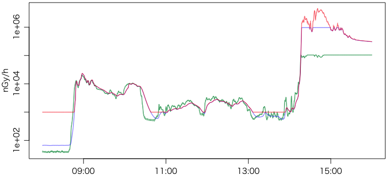
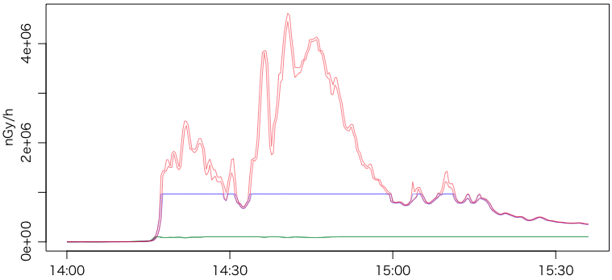
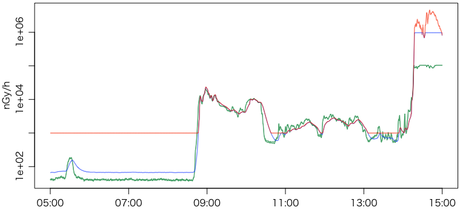

大震災から3年目の2014年3月11日，19時からのNHKニュース7で原発事故 克明な放射線量データ判明というニュースが放送された。「３年がたって初めて明らかになったデータ」で，「福島県が管理するモニタリングポスト」の「１４か所で、事故後数日の２０秒ごとの放射線量の値が記録されていたことが、ＮＨＫの取材で分かりました」とのことである。重要な部分を引用すると，
福島県によりますと、事故直後の詳しい放射線量のデータは電源が失われるまで自動観測が行われたモニタリングポストのメモリーに記録されていました。
公開するには、データを変換し、時系列が分かるように取りまとめる必要があります。
しかし、事故のあとは停電で、各地の放射線量は職員が回って計測しなければならず、集めた毎日のデータを住民に提供するのが精いっぱいだったということです。
このため、メモリーに記録された事故直後のデータまで手が回らず、これまでは１時間ごとの値をおととし９月に公表するにとどまっていました。
事故後の混乱で埋もれたデータはほかにもあると考えられ、十分な検証のためにも、早急な掘り起こしが必要です。
ということで，2012年9月に1時間値を発表するも20秒値まで手が回らなかったようである。
このニュースのすぐ後，福島県原子力センターの平成23年3月の空間線量率測定結果ページで公開されていることをツイッターで教えていただいた。このページの上のほうの1時間値は2012年10月12日のタイムスタンプだが，下のほうの20秒値は2014年2月13日〜3月6日のタイムスタンプである。うれしいことに，ネ申Excel化したものではなく，生データのテキストファイルである（これを取り出すのに1年半かかったのか…）。
詳細は2014年3月16日のNHKスペシャル｜メルトダウン File.４放射能"大量放出"の真相で放送されるようだ。
とりあえず，2014年3月11日のNHKニュースで紹介された双葉町上羽鳥のモニタリングポスト（福島第一原発の北西5.6km）の20秒値 201103_recdat25_kamihatori.txt を見ると，先頭29行をスキップしたデータは次のCSV形式である：
C-DOSE，S-DOSEについては http://www.pref.fukushima.jp/j/mpsokutei01.pdf および仕様 http://www.pref.fukushima.jp/shinsa/koukoku/20101112-1168/siyou.pdf に詳しい。以下では無視する。
グラフにするためにRで読み込む。話題のdata.tableを使ってみる。
library(data.table)
library(fasttime)
x = fread("201103_recdat25_kamihatori.txt", skip=29)
x[, t:=fastPOSIXct(paste(V1,V2))-9*3600]
ニュースでやっていた14:40:40の値は x[t==as.POSIXct("2011-03-12 14:40:40")]
で調べられる。CH006 MIN（14列目），MAX（15列目）はそれぞれ4.4463mGy/h，4.6132mGy/hで，4.6mSv/hはMAXを丸めて単位をGy→Svに読み替えたもののようである。
プルームが来る前から最大値のあたりまで片対数でプロットしてみる：
x1 = subset(x, t >= as.POSIXct("2011-03-12 08:00:00") &
t <= as.POSIXct("2011-03-12 16:00:00"))
plot(x1$t, x1$V4, type="n", log="y",
ylim=range(c(x1$V15,x1$V4)), xlab="", ylab="nGy/h")
points(x1$t, x1$V4, type="l", col="#35a16b") # CH001MIN緑
points(x1$t, x1$V5, type="l", col="#35a16b") # CH001MAX緑
points(x1$t, x1$V12, type="l", col="#0041ff80") # CH005MIN青
points(x1$t, x1$V13, type="l", col="#0041ff80") # CH005MAX青
points(x1$t, x1$V14, type="l", col="#ff280080") # CH006MIN赤
points(x1$t, x1$V15, type="l", col="#ff280080") # CH006MAX赤

CH006は1μGy/h以上，CH005は1mGy/h以下，CH001は100μGy/h以下がレンジのようである。
NHKの図と同じようにリニアに描いてみる：
x1 = subset(x, t >= as.POSIXct("2011-03-12 14:00:00") &
t <= as.POSIXct("2011-03-12 15:36:00"))
plot(x1$t, x1$V15, type="n",
ylim=range(c(x1$V15,0)), xlab="", ylab="nGy/h")
points(x1$t, x1$V4, type="l", col="#35a16b") # CH001MIN緑
points(x1$t, x1$V5, type="l", col="#35a16b") # CH001MAX緑
points(x1$t, x1$V12, type="l", col="#0041ff80") # CH005MIN青
points(x1$t, x1$V13, type="l", col="#0041ff80") # CH005MAX青
points(x1$t, x1$V14, type="l", col="#ff280080") # CH006MIN赤
points(x1$t, x1$V15, type="l", col="#ff280080") # CH006MAX赤

ついでに最初の小さなピークの見える時間から：
Last modified: